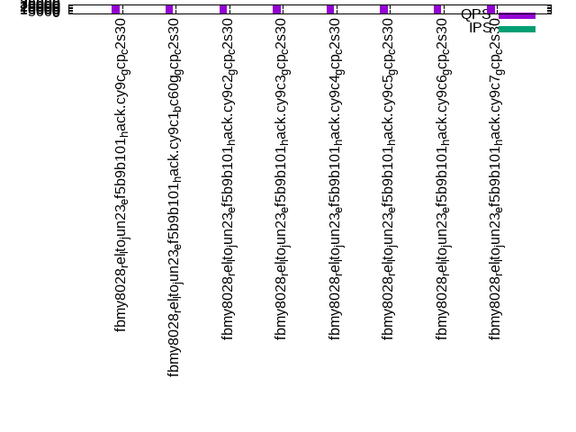

This is a report for the insert benchmark with 4000M docs and 8 client(s). It is generated by scripts (bash, awk, sed) and Tufte might not be impressed. An overview of the insert benchmark is here and a short update is here. Below, by DBMS, I mean DBMS+version.config. An example is my8020.c10b40 where my means MySQL, 8020 is version 8.0.20 and c10b40 is the name for the configuration file.
The test server is a c2-standard-30 from GCP with 15 cores, hyperthreads disabled, 120G RAM, XFS + SW RAID 0 on 4 NVMe devices (1.5TB). The benchmark was run with 8 client and there were 1 or 3 connections per client (1 for queries or inserts without rate limits, 1+1 for rate limited inserts+deletes). There are 8 tables, client per table. It loads 500M rows per table without secondary indexes, creates secondary indexes, then inserts 50M rows with a delete per insert to avoid growing the table. It then does 3 read+write tests for 3600s each that do queries as fast as possible with 100, 500 and then 1000 inserts/second/client concurrent with the queries and 1000 deletes/second to avoid growing the table. The database is larger than memory.
The tested DBMS are:
The numbers are inserts/s for l.i0 and l.i1, indexed docs (or rows) /s for l.x and queries/s for q*.2. The values are the average rate over the entire test for inserts (IPS) and queries (QPS). The range of values for IPS and QPS is split into 3 parts: bottom 25%, middle 50%, top 25%. Values in the bottom 25% have a red background, values in the top 25% have a green background and values in the middle have no color. A gray background is used for values that can be ignored because the DBMS did not sustain the target insert rate. Red backgrounds are not used when the minimum value is within 80% of the max value.
| dbms | l.i0 | l.x | l.i1 | q100.1 | q500.1 | q1000.1 |
|---|---|---|---|---|---|---|
| fbmy8028_rel_lto_jun23_ef5b9b101_hack.cy9c_gcp_c2s30 | 528751 | 700543 | 81733 | 33047 | 32649 | 31560 |
| fbmy8028_rel_lto_jun23_ef5b9b101_hack.cy9c1_bc60g_gcp_c2s30 | 550888 | 618923 | 83281 | 33463 | 32989 | 31861 |
| fbmy8028_rel_lto_jun23_ef5b9b101_hack.cy9c2_gcp_c2s30 | 516129 | 672851 | 81021 | 30521 | 30398 | 29286 |
| fbmy8028_rel_lto_jun23_ef5b9b101_hack.cy9c3_gcp_c2s30 | 359809 | 660082 | 36630 | 31926 | 31722 | 30437 |
| fbmy8028_rel_lto_jun23_ef5b9b101_hack.cy9c4_gcp_c2s30 | 504032 | 651482 | 59988 | 31853 | 31750 | 30608 |
| fbmy8028_rel_lto_jun23_ef5b9b101_hack.cy9c5_gcp_c2s30 | 558737 | 650740 | 85966 | 31456 | 31439 | 30545 |
| fbmy8028_rel_lto_jun23_ef5b9b101_hack.cy9c6_gcp_c2s30 | 572820 | 610236 | 85452 | 33722 | 33662 | 32728 |
| fbmy8028_rel_lto_jun23_ef5b9b101_hack.cy9c7_gcp_c2s30 | 575788 | 621423 | 85598 | 33537 | 33367 | 32389 |
This table has relative throughput, throughput for the DBMS relative to the DBMS in the first line, using the absolute throughput from the previous table. Values less than 0.95 have a yellow background. Values greater than 1.05 have a blue background.
| dbms | l.i0 | l.x | l.i1 | q100.1 | q500.1 | q1000.1 |
|---|---|---|---|---|---|---|
| fbmy8028_rel_lto_jun23_ef5b9b101_hack.cy9c_gcp_c2s30 | 1.00 | 1.00 | 1.00 | 1.00 | 1.00 | 1.00 |
| fbmy8028_rel_lto_jun23_ef5b9b101_hack.cy9c1_bc60g_gcp_c2s30 | 1.04 | 0.88 | 1.02 | 1.01 | 1.01 | 1.01 |
| fbmy8028_rel_lto_jun23_ef5b9b101_hack.cy9c2_gcp_c2s30 | 0.98 | 0.96 | 0.99 | 0.92 | 0.93 | 0.93 |
| fbmy8028_rel_lto_jun23_ef5b9b101_hack.cy9c3_gcp_c2s30 | 0.68 | 0.94 | 0.45 | 0.97 | 0.97 | 0.96 |
| fbmy8028_rel_lto_jun23_ef5b9b101_hack.cy9c4_gcp_c2s30 | 0.95 | 0.93 | 0.73 | 0.96 | 0.97 | 0.97 |
| fbmy8028_rel_lto_jun23_ef5b9b101_hack.cy9c5_gcp_c2s30 | 1.06 | 0.93 | 1.05 | 0.95 | 0.96 | 0.97 |
| fbmy8028_rel_lto_jun23_ef5b9b101_hack.cy9c6_gcp_c2s30 | 1.08 | 0.87 | 1.05 | 1.02 | 1.03 | 1.04 |
| fbmy8028_rel_lto_jun23_ef5b9b101_hack.cy9c7_gcp_c2s30 | 1.09 | 0.89 | 1.05 | 1.01 | 1.02 | 1.03 |
This lists the average rate of inserts/s for the tests that do inserts concurrent with queries. For such tests the query rate is listed in the table above. The read+write tests are setup so that the insert rate should match the target rate every second. Cells that are not at least 95% of the target have a red background to indicate a failure to satisfy the target.
| dbms | q100.1 | q500.1 | q1000.1 |
|---|---|---|---|
| fbmy8028_rel_lto_jun23_ef5b9b101_hack.cy9c_gcp_c2s30 | 797 | 3987 | 7973 |
| fbmy8028_rel_lto_jun23_ef5b9b101_hack.cy9c1_bc60g_gcp_c2s30 | 797 | 3988 | 7976 |
| fbmy8028_rel_lto_jun23_ef5b9b101_hack.cy9c2_gcp_c2s30 | 797 | 3988 | 7973 |
| fbmy8028_rel_lto_jun23_ef5b9b101_hack.cy9c3_gcp_c2s30 | 798 | 3987 | 7973 |
| fbmy8028_rel_lto_jun23_ef5b9b101_hack.cy9c4_gcp_c2s30 | 797 | 3987 | 7973 |
| fbmy8028_rel_lto_jun23_ef5b9b101_hack.cy9c5_gcp_c2s30 | 797 | 3988 | 7976 |
| fbmy8028_rel_lto_jun23_ef5b9b101_hack.cy9c6_gcp_c2s30 | 797 | 3987 | 7976 |
| fbmy8028_rel_lto_jun23_ef5b9b101_hack.cy9c7_gcp_c2s30 | 797 | 3987 | 7976 |
| target | 800 | 4000 | 8000 |
l.i0: load without secondary indexes. Graphs for performance per 1-second interval are here.
Average throughput:
Insert response time histogram: each cell has the percentage of responses that take <= the time in the header and max is the max response time in seconds. For the max column values in the top 25% of the range have a red background and in the bottom 25% of the range have a green background. The red background is not used when the min value is within 80% of the max value.
| dbms | 256us | 1ms | 4ms | 16ms | 64ms | 256ms | 1s | 4s | 16s | gt | max |
|---|---|---|---|---|---|---|---|---|---|---|---|
| fbmy8028_rel_lto_jun23_ef5b9b101_hack.cy9c_gcp_c2s30 | 9.231 | 90.584 | 0.164 | 0.007 | 0.014 | nonzero | 0.559 | ||||
| fbmy8028_rel_lto_jun23_ef5b9b101_hack.cy9c1_bc60g_gcp_c2s30 | 8.293 | 91.529 | 0.156 | 0.007 | 0.014 | nonzero | 0.327 | ||||
| fbmy8028_rel_lto_jun23_ef5b9b101_hack.cy9c2_gcp_c2s30 | 9.688 | 90.138 | 0.154 | 0.006 | 0.014 | nonzero | 0.352 | ||||
| fbmy8028_rel_lto_jun23_ef5b9b101_hack.cy9c3_gcp_c2s30 | 7.562 | 86.141 | 5.401 | 0.881 | 0.015 | nonzero | 0.308 | ||||
| fbmy8028_rel_lto_jun23_ef5b9b101_hack.cy9c4_gcp_c2s30 | 8.571 | 89.953 | 1.456 | 0.006 | 0.014 | nonzero | 0.312 | ||||
| fbmy8028_rel_lto_jun23_ef5b9b101_hack.cy9c5_gcp_c2s30 | 6.988 | 92.850 | 0.135 | 0.010 | 0.016 | 0.001 | 0.370 | ||||
| fbmy8028_rel_lto_jun23_ef5b9b101_hack.cy9c6_gcp_c2s30 | 7.269 | 92.565 | 0.139 | 0.011 | 0.017 | 0.001 | 0.362 | ||||
| fbmy8028_rel_lto_jun23_ef5b9b101_hack.cy9c7_gcp_c2s30 | 6.893 | 92.940 | 0.138 | 0.010 | 0.017 | 0.001 | 0.392 |
Performance metrics for the DBMS listed above. Some are normalized by throughput, others are not. Legend for results is here.
ips qps rps rmbps wps wmbps rpq rkbpq wpi wkbpi csps cpups cspq cpupq dbgb1 dbgb2 rss maxop p50 p99 tag 528751 0 0 0.0 521.1 116.9 0.000 0.000 0.001 0.226 68600 71.7 0.130 20 125.3 125.5 25.7 0.559 66527 49546 4000m.fbmy8028_rel_lto_jun23_ef5b9b101_hack.cy9c_gcp_c2s30 550888 0 0 0.0 540.0 121.7 0.000 0.000 0.001 0.226 64361 73.6 0.117 20 125.2 125.4 26.7 0.327 69824 52742 4000m.fbmy8028_rel_lto_jun23_ef5b9b101_hack.cy9c1_bc60g_gcp_c2s30 516129 0 0 0.0 496.2 118.9 0.000 0.000 0.001 0.236 72623 71.2 0.141 21 125.1 125.4 25.5 0.352 64690 48247 4000m.fbmy8028_rel_lto_jun23_ef5b9b101_hack.cy9c2_gcp_c2s30 359809 0 0 0.0 460.1 114.9 0.000 0.000 0.001 0.327 44897 54.1 0.125 23 125.1 125.3 37.9 0.308 58934 4795 4000m.fbmy8028_rel_lto_jun23_ef5b9b101_hack.cy9c3_gcp_c2s30 504032 0 0 0.0 505.7 116.2 0.000 0.000 0.001 0.236 66354 68.0 0.132 20 125.2 125.4 26.5 0.312 67148 19779 4000m.fbmy8028_rel_lto_jun23_ef5b9b101_hack.cy9c4_gcp_c2s30 558737 0 0 0.0 576.4 128.3 0.000 0.000 0.001 0.235 65502 73.9 0.117 20 125.4 127.2 26.2 0.370 71023 49046 4000m.fbmy8028_rel_lto_jun23_ef5b9b101_hack.cy9c5_gcp_c2s30 572820 0 0 0.0 586.6 133.6 0.000 0.000 0.001 0.239 66552 74.4 0.116 19 125.0 126.9 27.1 0.362 73420 51640 4000m.fbmy8028_rel_lto_jun23_ef5b9b101_hack.cy9c6_gcp_c2s30 575788 0 0 0.0 591.0 135.1 0.000 0.000 0.001 0.240 67272 74.4 0.117 19 125.2 127.1 27.5 0.392 73820 50944 4000m.fbmy8028_rel_lto_jun23_ef5b9b101_hack.cy9c7_gcp_c2s30
l.x: create secondary indexes.
Average throughput:
Performance metrics for the DBMS listed above. Some are normalized by throughput, others are not. Legend for results is here.
ips qps rps rmbps wps wmbps rpq rkbpq wpi wkbpi csps cpups cspq cpupq dbgb1 dbgb2 rss maxop p50 p99 tag 700543 0 505 105.7 277.2 74.1 0.001 0.155 0.000 0.108 2351 50.1 0.003 11 257.6 257.8 102.3 0.002 NA NA 4000m.fbmy8028_rel_lto_jun23_ef5b9b101_hack.cy9c_gcp_c2s30 618923 0 603 116.4 240.7 65.5 0.001 0.193 0.000 0.108 1882 50.3 0.003 12 257.5 257.7 93.3 0.003 NA NA 4000m.fbmy8028_rel_lto_jun23_ef5b9b101_hack.cy9c1_bc60g_gcp_c2s30 672851 0 696 130.7 262.0 72.4 0.001 0.199 0.000 0.110 2242 50.2 0.003 11 257.5 257.7 94.8 0.002 NA NA 4000m.fbmy8028_rel_lto_jun23_ef5b9b101_hack.cy9c2_gcp_c2s30 660082 0 534 106.2 258.0 72.0 0.001 0.165 0.000 0.112 2078 50.0 0.003 11 257.2 257.5 90.8 0.002 NA NA 4000m.fbmy8028_rel_lto_jun23_ef5b9b101_hack.cy9c3_gcp_c2s30 651482 0 623 119.5 251.5 71.1 0.001 0.188 0.000 0.112 2057 49.8 0.003 11 257.5 257.7 94.7 0.004 NA NA 4000m.fbmy8028_rel_lto_jun23_ef5b9b101_hack.cy9c4_gcp_c2s30 650740 0 673 127.4 252.2 70.7 0.001 0.201 0.000 0.111 2014 50.4 0.003 12 257.7 257.9 94.6 0.020 NA NA 4000m.fbmy8028_rel_lto_jun23_ef5b9b101_hack.cy9c5_gcp_c2s30 610236 0 582 111.0 234.9 65.6 0.001 0.186 0.000 0.110 1794 50.0 0.003 12 257.4 259.3 92.6 0.003 NA NA 4000m.fbmy8028_rel_lto_jun23_ef5b9b101_hack.cy9c6_gcp_c2s30 621423 0 589 112.7 242.2 65.9 0.001 0.186 0.000 0.109 1879 49.9 0.003 12 257.6 259.5 93.3 0.002 NA NA 4000m.fbmy8028_rel_lto_jun23_ef5b9b101_hack.cy9c7_gcp_c2s30
l.i1: continue load after secondary indexes created. Graphs for performance per 1-second interval are here.
Average throughput:
Insert response time histogram: each cell has the percentage of responses that take <= the time in the header and max is the max response time in seconds. For the max column values in the top 25% of the range have a red background and in the bottom 25% of the range have a green background. The red background is not used when the min value is within 80% of the max value.
| dbms | 256us | 1ms | 4ms | 16ms | 64ms | 256ms | 1s | 4s | 16s | gt | max |
|---|---|---|---|---|---|---|---|---|---|---|---|
| fbmy8028_rel_lto_jun23_ef5b9b101_hack.cy9c_gcp_c2s30 | 0.016 | 48.923 | 50.076 | 0.725 | 0.258 | 0.002 | 0.579 | ||||
| fbmy8028_rel_lto_jun23_ef5b9b101_hack.cy9c1_bc60g_gcp_c2s30 | 0.010 | 40.114 | 59.265 | 0.505 | 0.099 | 0.008 | 0.644 | ||||
| fbmy8028_rel_lto_jun23_ef5b9b101_hack.cy9c2_gcp_c2s30 | 0.010 | 41.507 | 57.601 | 0.704 | 0.176 | 0.001 | 0.598 | ||||
| fbmy8028_rel_lto_jun23_ef5b9b101_hack.cy9c3_gcp_c2s30 | 0.013 | 41.863 | 44.171 | 10.460 | 3.491 | 0.002 | 0.316 | ||||
| fbmy8028_rel_lto_jun23_ef5b9b101_hack.cy9c4_gcp_c2s30 | 0.011 | 37.428 | 54.999 | 7.397 | 0.161 | 0.005 | nonzero | 1.200 | |||
| fbmy8028_rel_lto_jun23_ef5b9b101_hack.cy9c5_gcp_c2s30 | 0.018 | 38.406 | 61.434 | 0.126 | 0.014 | 0.002 | nonzero | 1.832 | |||
| fbmy8028_rel_lto_jun23_ef5b9b101_hack.cy9c6_gcp_c2s30 | 0.022 | 36.780 | 63.055 | 0.127 | 0.015 | 0.001 | nonzero | 2.317 | |||
| fbmy8028_rel_lto_jun23_ef5b9b101_hack.cy9c7_gcp_c2s30 | 0.018 | 36.964 | 62.873 | 0.128 | 0.015 | 0.002 | 0.676 |
Delete response time histogram: each cell has the percentage of responses that take <= the time in the header and max is the max response time in seconds. For the max column values in the top 25% of the range have a red background and in the bottom 25% of the range have a green background. The red background is not used when the min value is within 80% of the max value.
| dbms | 256us | 1ms | 4ms | 16ms | 64ms | 256ms | 1s | 4s | 16s | gt | max |
|---|---|---|---|---|---|---|---|---|---|---|---|
| fbmy8028_rel_lto_jun23_ef5b9b101_hack.cy9c_gcp_c2s30 | 0.016 | 41.872 | 56.958 | 0.874 | 0.278 | 0.003 | 0.787 | ||||
| fbmy8028_rel_lto_jun23_ef5b9b101_hack.cy9c1_bc60g_gcp_c2s30 | 0.012 | 33.802 | 65.394 | 0.666 | 0.117 | 0.009 | 0.711 | ||||
| fbmy8028_rel_lto_jun23_ef5b9b101_hack.cy9c2_gcp_c2s30 | 0.013 | 35.088 | 63.847 | 0.856 | 0.193 | 0.002 | 0.529 | ||||
| fbmy8028_rel_lto_jun23_ef5b9b101_hack.cy9c3_gcp_c2s30 | 0.014 | 37.864 | 48.034 | 10.576 | 3.510 | 0.002 | 0.316 | ||||
| fbmy8028_rel_lto_jun23_ef5b9b101_hack.cy9c4_gcp_c2s30 | 0.014 | 34.401 | 57.860 | 7.552 | 0.168 | 0.005 | nonzero | 1.200 | |||
| fbmy8028_rel_lto_jun23_ef5b9b101_hack.cy9c5_gcp_c2s30 | 0.025 | 34.294 | 65.359 | 0.295 | 0.026 | 0.002 | nonzero | 1.831 | |||
| fbmy8028_rel_lto_jun23_ef5b9b101_hack.cy9c6_gcp_c2s30 | 0.033 | 32.897 | 66.745 | 0.295 | 0.028 | 0.002 | nonzero | 2.323 | |||
| fbmy8028_rel_lto_jun23_ef5b9b101_hack.cy9c7_gcp_c2s30 | 0.030 | 33.311 | 66.337 | 0.292 | 0.029 | 0.002 | 0.676 |
Performance metrics for the DBMS listed above. Some are normalized by throughput, others are not. Legend for results is here.
ips qps rps rmbps wps wmbps rpq rkbpq wpi wkbpi csps cpups cspq cpupq dbgb1 dbgb2 rss maxop p50 p99 tag 81733 0 553 39.3 584.0 119.0 0.007 0.493 0.007 1.491 60233 62.8 0.737 115 286.2 288.0 93.8 0.579 11042 250 4000m.fbmy8028_rel_lto_jun23_ef5b9b101_hack.cy9c_gcp_c2s30 83281 0 510 26.3 600.2 127.0 0.006 0.323 0.007 1.561 49190 61.9 0.591 111 285.1 286.9 90.0 0.644 10638 400 4000m.fbmy8028_rel_lto_jun23_ef5b9b101_hack.cy9c1_bc60g_gcp_c2s30 81021 0 522 37.5 580.6 122.0 0.006 0.474 0.007 1.541 92179 65.6 1.138 121 289.2 291.0 91.6 0.598 10793 350 4000m.fbmy8028_rel_lto_jun23_ef5b9b101_hack.cy9c2_gcp_c2s30 36630 0 208 16.2 334.6 76.3 0.006 0.454 0.009 2.134 25945 30.2 0.708 124 281.9 283.7 87.9 0.316 1550 250 4000m.fbmy8028_rel_lto_jun23_ef5b9b101_hack.cy9c3_gcp_c2s30 59988 0 342 26.5 526.1 102.9 0.006 0.453 0.009 1.756 44233 47.0 0.737 118 281.6 283.4 91.5 1.200 8091 549 4000m.fbmy8028_rel_lto_jun23_ef5b9b101_hack.cy9c4_gcp_c2s30 85966 0 507 39.5 747.8 143.6 0.006 0.470 0.009 1.710 52491 67.1 0.611 117 283.7 285.5 91.4 1.832 10788 7442 4000m.fbmy8028_rel_lto_jun23_ef5b9b101_hack.cy9c5_gcp_c2s30 85452 0 466 27.0 742.9 142.3 0.005 0.324 0.009 1.705 49743 65.5 0.582 115 283.8 285.6 89.1 2.317 10738 7292 4000m.fbmy8028_rel_lto_jun23_ef5b9b101_hack.cy9c6_gcp_c2s30 85598 0 465 27.1 743.3 139.9 0.005 0.324 0.009 1.674 49973 65.4 0.584 115 282.3 284.1 90.0 0.676 10738 7342 4000m.fbmy8028_rel_lto_jun23_ef5b9b101_hack.cy9c7_gcp_c2s30
q100.1: range queries with 100 insert/s per client. Graphs for performance per 1-second interval are here.
Average throughput:
Query response time histogram: each cell has the percentage of responses that take <= the time in the header and max is the max response time in seconds. For max values in the top 25% of the range have a red background and in the bottom 25% of the range have a green background. The red background is not used when the min value is within 80% of the max value.
| dbms | 256us | 1ms | 4ms | 16ms | 64ms | 256ms | 1s | 4s | 16s | gt | max |
|---|---|---|---|---|---|---|---|---|---|---|---|
| fbmy8028_rel_lto_jun23_ef5b9b101_hack.cy9c_gcp_c2s30 | 74.258 | 25.333 | 0.407 | 0.001 | nonzero | nonzero | 0.121 | ||||
| fbmy8028_rel_lto_jun23_ef5b9b101_hack.cy9c1_bc60g_gcp_c2s30 | 73.252 | 26.386 | 0.359 | 0.002 | nonzero | nonzero | 0.114 | ||||
| fbmy8028_rel_lto_jun23_ef5b9b101_hack.cy9c2_gcp_c2s30 | 69.698 | 29.764 | 0.535 | 0.002 | 0.001 | nonzero | 0.194 | ||||
| fbmy8028_rel_lto_jun23_ef5b9b101_hack.cy9c3_gcp_c2s30 | 75.486 | 24.134 | 0.379 | 0.001 | nonzero | nonzero | 0.096 | ||||
| fbmy8028_rel_lto_jun23_ef5b9b101_hack.cy9c4_gcp_c2s30 | 75.653 | 23.979 | 0.367 | 0.001 | nonzero | 0.039 | |||||
| fbmy8028_rel_lto_jun23_ef5b9b101_hack.cy9c5_gcp_c2s30 | 74.087 | 25.485 | 0.425 | 0.002 | nonzero | 0.049 | |||||
| fbmy8028_rel_lto_jun23_ef5b9b101_hack.cy9c6_gcp_c2s30 | 76.521 | 23.199 | 0.280 | 0.001 | nonzero | nonzero | 0.092 | ||||
| fbmy8028_rel_lto_jun23_ef5b9b101_hack.cy9c7_gcp_c2s30 | 76.546 | 23.172 | 0.281 | 0.001 | nonzero | nonzero | 0.076 |
Insert response time histogram: each cell has the percentage of responses that take <= the time in the header and max is the max response time in seconds. For max values in the top 25% of the range have a red background and in the bottom 25% of the range have a green background. The red background is not used when the min value is within 80% of the max value.
| dbms | 256us | 1ms | 4ms | 16ms | 64ms | 256ms | 1s | 4s | 16s | gt | max |
|---|---|---|---|---|---|---|---|---|---|---|---|
| fbmy8028_rel_lto_jun23_ef5b9b101_hack.cy9c_gcp_c2s30 | 2.057 | 97.911 | 0.026 | 0.005 | 0.058 | ||||||
| fbmy8028_rel_lto_jun23_ef5b9b101_hack.cy9c1_bc60g_gcp_c2s30 | 2.703 | 97.262 | 0.035 | 0.011 | |||||||
| fbmy8028_rel_lto_jun23_ef5b9b101_hack.cy9c2_gcp_c2s30 | 0.406 | 99.571 | 0.016 | 0.007 | 0.047 | ||||||
| fbmy8028_rel_lto_jun23_ef5b9b101_hack.cy9c3_gcp_c2s30 | 2.028 | 97.946 | 0.017 | 0.009 | 0.049 | ||||||
| fbmy8028_rel_lto_jun23_ef5b9b101_hack.cy9c4_gcp_c2s30 | 1.849 | 98.146 | 0.005 | 0.008 | |||||||
| fbmy8028_rel_lto_jun23_ef5b9b101_hack.cy9c5_gcp_c2s30 | 0.903 | 99.089 | 0.005 | 0.003 | 0.045 | ||||||
| fbmy8028_rel_lto_jun23_ef5b9b101_hack.cy9c6_gcp_c2s30 | 4.309 | 95.682 | 0.007 | 0.002 | 0.078 | ||||||
| fbmy8028_rel_lto_jun23_ef5b9b101_hack.cy9c7_gcp_c2s30 | 3.497 | 96.498 | 0.005 | 0.007 |
Delete response time histogram: each cell has the percentage of responses that take <= the time in the header and max is the max response time in seconds. For max values in the top 25% of the range have a red background and in the bottom 25% of the range have a green background. The red background is not used when the min value is within 80% of the max value.
| dbms | 256us | 1ms | 4ms | 16ms | 64ms | 256ms | 1s | 4s | 16s | gt | max |
|---|---|---|---|---|---|---|---|---|---|---|---|
| fbmy8028_rel_lto_jun23_ef5b9b101_hack.cy9c_gcp_c2s30 | 8.870 | 91.092 | 0.033 | 0.005 | 0.057 | ||||||
| fbmy8028_rel_lto_jun23_ef5b9b101_hack.cy9c1_bc60g_gcp_c2s30 | 7.571 | 92.385 | 0.043 | 0.013 | |||||||
| fbmy8028_rel_lto_jun23_ef5b9b101_hack.cy9c2_gcp_c2s30 | 2.885 | 97.056 | 0.054 | 0.005 | 0.047 | ||||||
| fbmy8028_rel_lto_jun23_ef5b9b101_hack.cy9c3_gcp_c2s30 | 6.215 | 93.743 | 0.033 | 0.009 | 0.049 | ||||||
| fbmy8028_rel_lto_jun23_ef5b9b101_hack.cy9c4_gcp_c2s30 | 7.550 | 92.436 | 0.012 | 0.002 | 0.030 | ||||||
| fbmy8028_rel_lto_jun23_ef5b9b101_hack.cy9c5_gcp_c2s30 | 5.163 | 94.809 | 0.026 | 0.002 | 0.021 | ||||||
| fbmy8028_rel_lto_jun23_ef5b9b101_hack.cy9c6_gcp_c2s30 | 7.693 | 92.293 | 0.010 | 0.002 | 0.002 | 0.079 | |||||
| fbmy8028_rel_lto_jun23_ef5b9b101_hack.cy9c7_gcp_c2s30 | 8.592 | 91.391 | 0.017 | 0.008 |
Performance metrics for the DBMS listed above. Some are normalized by throughput, others are not. Legend for results is here.
ips qps rps rmbps wps wmbps rpq rkbpq wpi wkbpi csps cpups cspq cpupq dbgb1 dbgb2 rss maxop p50 p99 tag 797 33047 1271 12.7 24.4 4.2 0.038 0.392 0.031 5.414 130875 53.5 3.960 243 281.2 281.6 85.2 0.121 4507 1774 4000m.fbmy8028_rel_lto_jun23_ef5b9b101_hack.cy9c_gcp_c2s30 797 33463 986 9.8 27.5 5.0 0.029 0.301 0.035 6.421 130155 54.1 3.889 243 281.1 281.5 68.4 0.114 4060 1391 4000m.fbmy8028_rel_lto_jun23_ef5b9b101_hack.cy9c1_bc60g_gcp_c2s30 797 30521 1376 14.5 30.8 5.1 0.045 0.487 0.039 6.537 136497 53.4 4.472 262 280.9 281.4 84.2 0.194 3932 1550 4000m.fbmy8028_rel_lto_jun23_ef5b9b101_hack.cy9c2_gcp_c2s30 798 31926 1195 11.5 20.3 3.0 0.037 0.369 0.025 3.906 127522 53.4 3.994 251 280.8 281.3 85.0 0.096 3964 1886 4000m.fbmy8028_rel_lto_jun23_ef5b9b101_hack.cy9c3_gcp_c2s30 797 31853 1128 10.6 16.0 2.6 0.035 0.341 0.020 3.293 127516 53.1 4.003 250 281.0 281.5 87.4 0.039 4139 1790 4000m.fbmy8028_rel_lto_jun23_ef5b9b101_hack.cy9c4_gcp_c2s30 797 31456 1226 11.9 20.2 3.0 0.039 0.388 0.025 3.830 126279 53.2 4.014 254 280.9 281.4 87.0 0.049 4012 2030 4000m.fbmy8028_rel_lto_jun23_ef5b9b101_hack.cy9c5_gcp_c2s30 797 33722 899 7.9 17.8 2.7 0.027 0.241 0.022 3.463 131000 53.6 3.885 238 281.0 281.4 69.1 0.092 4123 1839 4000m.fbmy8028_rel_lto_jun23_ef5b9b101_hack.cy9c6_gcp_c2s30 797 33537 906 8.2 19.5 3.0 0.027 0.251 0.024 3.810 130307 53.8 3.885 241 280.9 281.3 68.2 0.076 4251 2062 4000m.fbmy8028_rel_lto_jun23_ef5b9b101_hack.cy9c7_gcp_c2s30
q500.1: range queries with 500 insert/s per client. Graphs for performance per 1-second interval are here.
Average throughput:
Query response time histogram: each cell has the percentage of responses that take <= the time in the header and max is the max response time in seconds. For max values in the top 25% of the range have a red background and in the bottom 25% of the range have a green background. The red background is not used when the min value is within 80% of the max value.
| dbms | 256us | 1ms | 4ms | 16ms | 64ms | 256ms | 1s | 4s | 16s | gt | max |
|---|---|---|---|---|---|---|---|---|---|---|---|
| fbmy8028_rel_lto_jun23_ef5b9b101_hack.cy9c_gcp_c2s30 | 73.915 | 26.075 | 0.009 | nonzero | nonzero | 0.039 | |||||
| fbmy8028_rel_lto_jun23_ef5b9b101_hack.cy9c1_bc60g_gcp_c2s30 | 73.570 | 26.419 | 0.010 | nonzero | nonzero | 0.031 | |||||
| fbmy8028_rel_lto_jun23_ef5b9b101_hack.cy9c2_gcp_c2s30 | 67.692 | 32.301 | 0.007 | nonzero | nonzero | nonzero | 0.141 | ||||
| fbmy8028_rel_lto_jun23_ef5b9b101_hack.cy9c3_gcp_c2s30 | 74.160 | 25.830 | 0.009 | nonzero | nonzero | 0.044 | |||||
| fbmy8028_rel_lto_jun23_ef5b9b101_hack.cy9c4_gcp_c2s30 | 74.192 | 25.798 | 0.010 | nonzero | nonzero | 0.048 | |||||
| fbmy8028_rel_lto_jun23_ef5b9b101_hack.cy9c5_gcp_c2s30 | 72.390 | 27.600 | 0.009 | nonzero | nonzero | 0.060 | |||||
| fbmy8028_rel_lto_jun23_ef5b9b101_hack.cy9c6_gcp_c2s30 | 76.403 | 23.585 | 0.012 | nonzero | nonzero | 0.019 | |||||
| fbmy8028_rel_lto_jun23_ef5b9b101_hack.cy9c7_gcp_c2s30 | 76.042 | 23.944 | 0.013 | nonzero | nonzero | 0.027 |
Insert response time histogram: each cell has the percentage of responses that take <= the time in the header and max is the max response time in seconds. For max values in the top 25% of the range have a red background and in the bottom 25% of the range have a green background. The red background is not used when the min value is within 80% of the max value.
| dbms | 256us | 1ms | 4ms | 16ms | 64ms | 256ms | 1s | 4s | 16s | gt | max |
|---|---|---|---|---|---|---|---|---|---|---|---|
| fbmy8028_rel_lto_jun23_ef5b9b101_hack.cy9c_gcp_c2s30 | 11.478 | 88.449 | 0.070 | 0.002 | 0.031 | ||||||
| fbmy8028_rel_lto_jun23_ef5b9b101_hack.cy9c1_bc60g_gcp_c2s30 | 11.189 | 88.736 | 0.071 | 0.002 | 0.001 | 0.089 | |||||
| fbmy8028_rel_lto_jun23_ef5b9b101_hack.cy9c2_gcp_c2s30 | 2.491 | 97.425 | 0.083 | 0.001 | nonzero | 0.139 | |||||
| fbmy8028_rel_lto_jun23_ef5b9b101_hack.cy9c3_gcp_c2s30 | 7.554 | 92.354 | 0.090 | 0.001 | 0.034 | ||||||
| fbmy8028_rel_lto_jun23_ef5b9b101_hack.cy9c4_gcp_c2s30 | 5.243 | 94.634 | 0.122 | 0.001 | 0.049 | ||||||
| fbmy8028_rel_lto_jun23_ef5b9b101_hack.cy9c5_gcp_c2s30 | 4.917 | 95.048 | 0.034 | 0.001 | 0.036 | ||||||
| fbmy8028_rel_lto_jun23_ef5b9b101_hack.cy9c6_gcp_c2s30 | 8.156 | 91.690 | 0.151 | 0.003 | 0.023 | ||||||
| fbmy8028_rel_lto_jun23_ef5b9b101_hack.cy9c7_gcp_c2s30 | 5.265 | 93.188 | 1.540 | 0.008 | 0.001 | 0.069 |
Delete response time histogram: each cell has the percentage of responses that take <= the time in the header and max is the max response time in seconds. For max values in the top 25% of the range have a red background and in the bottom 25% of the range have a green background. The red background is not used when the min value is within 80% of the max value.
| dbms | 256us | 1ms | 4ms | 16ms | 64ms | 256ms | 1s | 4s | 16s | gt | max |
|---|---|---|---|---|---|---|---|---|---|---|---|
| fbmy8028_rel_lto_jun23_ef5b9b101_hack.cy9c_gcp_c2s30 | 24.231 | 75.682 | 0.080 | 0.007 | 0.034 | ||||||
| fbmy8028_rel_lto_jun23_ef5b9b101_hack.cy9c1_bc60g_gcp_c2s30 | 22.289 | 77.614 | 0.091 | 0.005 | 0.001 | 0.105 | |||||
| fbmy8028_rel_lto_jun23_ef5b9b101_hack.cy9c2_gcp_c2s30 | 9.083 | 90.827 | 0.084 | 0.005 | 0.002 | 0.140 | |||||
| fbmy8028_rel_lto_jun23_ef5b9b101_hack.cy9c3_gcp_c2s30 | 19.836 | 80.073 | 0.087 | 0.005 | 0.039 | ||||||
| fbmy8028_rel_lto_jun23_ef5b9b101_hack.cy9c4_gcp_c2s30 | 12.322 | 87.541 | 0.132 | 0.005 | 0.047 | ||||||
| fbmy8028_rel_lto_jun23_ef5b9b101_hack.cy9c5_gcp_c2s30 | 17.439 | 82.503 | 0.052 | 0.005 | 0.055 | ||||||
| fbmy8028_rel_lto_jun23_ef5b9b101_hack.cy9c6_gcp_c2s30 | 17.591 | 82.252 | 0.155 | 0.003 | 0.031 | ||||||
| fbmy8028_rel_lto_jun23_ef5b9b101_hack.cy9c7_gcp_c2s30 | 13.858 | 84.634 | 1.498 | 0.009 | 0.001 | 0.068 |
Performance metrics for the DBMS listed above. Some are normalized by throughput, others are not. Legend for results is here.
ips qps rps rmbps wps wmbps rpq rkbpq wpi wkbpi csps cpups cspq cpupq dbgb1 dbgb2 rss maxop p50 p99 tag 3987 32649 214 4.6 50.2 8.5 0.007 0.143 0.013 2.186 128843 56.5 3.946 260 281.0 282.5 84.7 0.039 4349 3900 4000m.fbmy8028_rel_lto_jun23_ef5b9b101_hack.cy9c_gcp_c2s30 3988 32989 96 2.4 46.5 9.5 0.003 0.074 0.012 2.428 127531 56.7 3.866 258 281.2 282.7 64.3 0.031 4012 3628 4000m.fbmy8028_rel_lto_jun23_ef5b9b101_hack.cy9c1_bc60g_gcp_c2s30 3988 30398 199 4.0 46.1 7.5 0.007 0.135 0.012 1.930 138443 56.0 4.554 276 281.0 282.5 84.3 0.141 3820 3454 4000m.fbmy8028_rel_lto_jun23_ef5b9b101_hack.cy9c2_gcp_c2s30 3987 31722 165 3.7 47.0 7.3 0.005 0.120 0.012 1.866 126451 56.4 3.986 267 281.0 282.6 84.2 0.044 3868 3500 4000m.fbmy8028_rel_lto_jun23_ef5b9b101_hack.cy9c3_gcp_c2s30 3987 31750 178 4.0 47.7 8.1 0.006 0.129 0.012 2.083 126908 56.4 3.997 266 281.3 282.8 84.6 0.048 3981 3564 4000m.fbmy8028_rel_lto_jun23_ef5b9b101_hack.cy9c4_gcp_c2s30 3988 31439 178 3.9 49.9 8.4 0.006 0.128 0.013 2.161 125761 56.5 4.000 270 280.9 282.4 85.2 0.060 3884 3244 4000m.fbmy8028_rel_lto_jun23_ef5b9b101_hack.cy9c5_gcp_c2s30 3987 33662 74 2.0 47.7 8.5 0.002 0.060 0.012 2.175 129678 56.6 3.852 252 281.0 282.5 64.9 0.019 4060 3374 4000m.fbmy8028_rel_lto_jun23_ef5b9b101_hack.cy9c6_gcp_c2s30 3987 33367 75 1.9 50.6 9.2 0.002 0.059 0.013 2.357 128506 56.8 3.851 255 281.0 282.5 65.2 0.027 4109 3468 4000m.fbmy8028_rel_lto_jun23_ef5b9b101_hack.cy9c7_gcp_c2s30
q1000.1: range queries with 1000 insert/s per client. Graphs for performance per 1-second interval are here.
Average throughput:
Query response time histogram: each cell has the percentage of responses that take <= the time in the header and max is the max response time in seconds. For max values in the top 25% of the range have a red background and in the bottom 25% of the range have a green background. The red background is not used when the min value is within 80% of the max value.
| dbms | 256us | 1ms | 4ms | 16ms | 64ms | 256ms | 1s | 4s | 16s | gt | max |
|---|---|---|---|---|---|---|---|---|---|---|---|
| fbmy8028_rel_lto_jun23_ef5b9b101_hack.cy9c_gcp_c2s30 | 71.993 | 27.992 | 0.015 | nonzero | nonzero | 0.025 | |||||
| fbmy8028_rel_lto_jun23_ef5b9b101_hack.cy9c1_bc60g_gcp_c2s30 | 72.307 | 27.674 | 0.019 | 0.001 | nonzero | 0.037 | |||||
| fbmy8028_rel_lto_jun23_ef5b9b101_hack.cy9c2_gcp_c2s30 | 62.494 | 37.484 | 0.021 | nonzero | nonzero | 0.040 | |||||
| fbmy8028_rel_lto_jun23_ef5b9b101_hack.cy9c3_gcp_c2s30 | 68.157 | 31.823 | 0.019 | nonzero | nonzero | 0.047 | |||||
| fbmy8028_rel_lto_jun23_ef5b9b101_hack.cy9c4_gcp_c2s30 | 68.797 | 31.181 | 0.021 | nonzero | nonzero | 0.042 | |||||
| fbmy8028_rel_lto_jun23_ef5b9b101_hack.cy9c5_gcp_c2s30 | 68.057 | 31.906 | 0.037 | 0.001 | nonzero | 0.037 | |||||
| fbmy8028_rel_lto_jun23_ef5b9b101_hack.cy9c6_gcp_c2s30 | 74.929 | 25.046 | 0.025 | nonzero | nonzero | nonzero | 0.090 | ||||
| fbmy8028_rel_lto_jun23_ef5b9b101_hack.cy9c7_gcp_c2s30 | 73.846 | 26.134 | 0.020 | nonzero | nonzero | 0.056 |
Insert response time histogram: each cell has the percentage of responses that take <= the time in the header and max is the max response time in seconds. For max values in the top 25% of the range have a red background and in the bottom 25% of the range have a green background. The red background is not used when the min value is within 80% of the max value.
| dbms | 256us | 1ms | 4ms | 16ms | 64ms | 256ms | 1s | 4s | 16s | gt | max |
|---|---|---|---|---|---|---|---|---|---|---|---|
| fbmy8028_rel_lto_jun23_ef5b9b101_hack.cy9c_gcp_c2s30 | 16.461 | 83.528 | 0.011 | 0.001 | 0.026 | ||||||
| fbmy8028_rel_lto_jun23_ef5b9b101_hack.cy9c1_bc60g_gcp_c2s30 | 8.100 | 91.243 | 0.655 | 0.002 | 0.041 | ||||||
| fbmy8028_rel_lto_jun23_ef5b9b101_hack.cy9c2_gcp_c2s30 | 2.404 | 96.041 | 1.545 | 0.010 | 0.028 | ||||||
| fbmy8028_rel_lto_jun23_ef5b9b101_hack.cy9c3_gcp_c2s30 | 6.709 | 92.721 | 0.567 | 0.003 | 0.028 | ||||||
| fbmy8028_rel_lto_jun23_ef5b9b101_hack.cy9c4_gcp_c2s30 | 3.877 | 95.409 | 0.710 | 0.003 | nonzero | 0.071 | |||||
| fbmy8028_rel_lto_jun23_ef5b9b101_hack.cy9c5_gcp_c2s30 | 2.395 | 81.327 | 16.257 | 0.021 | 0.029 | ||||||
| fbmy8028_rel_lto_jun23_ef5b9b101_hack.cy9c6_gcp_c2s30 | 5.036 | 89.371 | 5.580 | 0.013 | 0.031 | ||||||
| fbmy8028_rel_lto_jun23_ef5b9b101_hack.cy9c7_gcp_c2s30 | 9.128 | 90.237 | 0.628 | 0.007 | 0.030 |
Delete response time histogram: each cell has the percentage of responses that take <= the time in the header and max is the max response time in seconds. For max values in the top 25% of the range have a red background and in the bottom 25% of the range have a green background. The red background is not used when the min value is within 80% of the max value.
| dbms | 256us | 1ms | 4ms | 16ms | 64ms | 256ms | 1s | 4s | 16s | gt | max |
|---|---|---|---|---|---|---|---|---|---|---|---|
| fbmy8028_rel_lto_jun23_ef5b9b101_hack.cy9c_gcp_c2s30 | 26.466 | 73.494 | 0.033 | 0.007 | 0.051 | ||||||
| fbmy8028_rel_lto_jun23_ef5b9b101_hack.cy9c1_bc60g_gcp_c2s30 | 18.476 | 80.794 | 0.721 | 0.009 | 0.059 | ||||||
| fbmy8028_rel_lto_jun23_ef5b9b101_hack.cy9c2_gcp_c2s30 | 4.787 | 93.674 | 1.522 | 0.016 | 0.055 | ||||||
| fbmy8028_rel_lto_jun23_ef5b9b101_hack.cy9c3_gcp_c2s30 | 14.523 | 84.867 | 0.600 | 0.010 | nonzero | 0.081 | |||||
| fbmy8028_rel_lto_jun23_ef5b9b101_hack.cy9c4_gcp_c2s30 | 10.210 | 89.068 | 0.711 | 0.010 | nonzero | 0.071 | |||||
| fbmy8028_rel_lto_jun23_ef5b9b101_hack.cy9c5_gcp_c2s30 | 5.199 | 79.298 | 15.474 | 0.029 | nonzero | 0.086 | |||||
| fbmy8028_rel_lto_jun23_ef5b9b101_hack.cy9c6_gcp_c2s30 | 13.292 | 81.272 | 5.416 | 0.020 | nonzero | 0.075 | |||||
| fbmy8028_rel_lto_jun23_ef5b9b101_hack.cy9c7_gcp_c2s30 | 19.826 | 79.514 | 0.649 | 0.011 | 0.042 |
Performance metrics for the DBMS listed above. Some are normalized by throughput, others are not. Legend for results is here.
ips qps rps rmbps wps wmbps rpq rkbpq wpi wkbpi csps cpups cspq cpupq dbgb1 dbgb2 rss maxop p50 p99 tag 7973 31560 280 6.0 89.4 15.6 0.009 0.194 0.011 1.999 126955 59.5 4.023 283 281.5 283.2 84.4 0.025 4171 3741 4000m.fbmy8028_rel_lto_jun23_ef5b9b101_hack.cy9c_gcp_c2s30 7976 31861 189 4.5 91.8 16.2 0.006 0.146 0.012 2.074 123885 59.7 3.888 281 281.2 282.9 63.7 0.037 3916 3516 4000m.fbmy8028_rel_lto_jun23_ef5b9b101_hack.cy9c1_bc60g_gcp_c2s30 7973 29286 313 6.4 91.9 15.6 0.011 0.224 0.012 1.997 138165 59.1 4.718 303 281.2 282.9 84.1 0.040 3660 3292 4000m.fbmy8028_rel_lto_jun23_ef5b9b101_hack.cy9c2_gcp_c2s30 7973 30437 260 6.0 92.3 15.8 0.009 0.202 0.012 2.031 123521 59.6 4.058 294 281.1 282.8 83.7 0.047 3692 3308 4000m.fbmy8028_rel_lto_jun23_ef5b9b101_hack.cy9c3_gcp_c2s30 7973 30608 234 5.6 90.7 15.3 0.008 0.188 0.011 1.961 124250 59.6 4.059 292 281.2 282.8 84.5 0.042 3916 3422 4000m.fbmy8028_rel_lto_jun23_ef5b9b101_hack.cy9c4_gcp_c2s30 7976 30545 250 5.8 93.9 16.3 0.008 0.193 0.012 2.088 122625 59.8 4.015 294 281.0 282.7 84.0 0.037 3774 3069 4000m.fbmy8028_rel_lto_jun23_ef5b9b101_hack.cy9c5_gcp_c2s30 7976 32728 177 4.2 96.5 16.5 0.005 0.131 0.012 2.116 126237 59.9 3.857 275 281.0 282.6 63.5 0.090 3948 3212 4000m.fbmy8028_rel_lto_jun23_ef5b9b101_hack.cy9c6_gcp_c2s30 7976 32389 173 4.3 95.5 16.5 0.005 0.136 0.012 2.123 125233 59.9 3.867 277 281.0 282.7 63.9 0.056 3980 3262 4000m.fbmy8028_rel_lto_jun23_ef5b9b101_hack.cy9c7_gcp_c2s30
l.i0: load without secondary indexes
Performance metrics for all DBMS, not just the ones listed above. Some are normalized by throughput, others are not. Legend for results is here.
ips qps rps rmbps wps wmbps rpq rkbpq wpi wkbpi csps cpups cspq cpupq dbgb1 dbgb2 rss maxop p50 p99 tag 528751 0 0 0.0 521.1 116.9 0.000 0.000 0.001 0.226 68600 71.7 0.130 20 125.3 125.5 25.7 0.559 66527 49546 4000m.fbmy8028_rel_lto_jun23_ef5b9b101_hack.cy9c_gcp_c2s30 550888 0 0 0.0 540.0 121.7 0.000 0.000 0.001 0.226 64361 73.6 0.117 20 125.2 125.4 26.7 0.327 69824 52742 4000m.fbmy8028_rel_lto_jun23_ef5b9b101_hack.cy9c1_bc60g_gcp_c2s30 516129 0 0 0.0 496.2 118.9 0.000 0.000 0.001 0.236 72623 71.2 0.141 21 125.1 125.4 25.5 0.352 64690 48247 4000m.fbmy8028_rel_lto_jun23_ef5b9b101_hack.cy9c2_gcp_c2s30 359809 0 0 0.0 460.1 114.9 0.000 0.000 0.001 0.327 44897 54.1 0.125 23 125.1 125.3 37.9 0.308 58934 4795 4000m.fbmy8028_rel_lto_jun23_ef5b9b101_hack.cy9c3_gcp_c2s30 504032 0 0 0.0 505.7 116.2 0.000 0.000 0.001 0.236 66354 68.0 0.132 20 125.2 125.4 26.5 0.312 67148 19779 4000m.fbmy8028_rel_lto_jun23_ef5b9b101_hack.cy9c4_gcp_c2s30 558737 0 0 0.0 576.4 128.3 0.000 0.000 0.001 0.235 65502 73.9 0.117 20 125.4 127.2 26.2 0.370 71023 49046 4000m.fbmy8028_rel_lto_jun23_ef5b9b101_hack.cy9c5_gcp_c2s30 572820 0 0 0.0 586.6 133.6 0.000 0.000 0.001 0.239 66552 74.4 0.116 19 125.0 126.9 27.1 0.362 73420 51640 4000m.fbmy8028_rel_lto_jun23_ef5b9b101_hack.cy9c6_gcp_c2s30 575788 0 0 0.0 591.0 135.1 0.000 0.000 0.001 0.240 67272 74.4 0.117 19 125.2 127.1 27.5 0.392 73820 50944 4000m.fbmy8028_rel_lto_jun23_ef5b9b101_hack.cy9c7_gcp_c2s30
l.x: create secondary indexes
Performance metrics for all DBMS, not just the ones listed above. Some are normalized by throughput, others are not. Legend for results is here.
ips qps rps rmbps wps wmbps rpq rkbpq wpi wkbpi csps cpups cspq cpupq dbgb1 dbgb2 rss maxop p50 p99 tag 700543 0 505 105.7 277.2 74.1 0.001 0.155 0.000 0.108 2351 50.1 0.003 11 257.6 257.8 102.3 0.002 NA NA 4000m.fbmy8028_rel_lto_jun23_ef5b9b101_hack.cy9c_gcp_c2s30 618923 0 603 116.4 240.7 65.5 0.001 0.193 0.000 0.108 1882 50.3 0.003 12 257.5 257.7 93.3 0.003 NA NA 4000m.fbmy8028_rel_lto_jun23_ef5b9b101_hack.cy9c1_bc60g_gcp_c2s30 672851 0 696 130.7 262.0 72.4 0.001 0.199 0.000 0.110 2242 50.2 0.003 11 257.5 257.7 94.8 0.002 NA NA 4000m.fbmy8028_rel_lto_jun23_ef5b9b101_hack.cy9c2_gcp_c2s30 660082 0 534 106.2 258.0 72.0 0.001 0.165 0.000 0.112 2078 50.0 0.003 11 257.2 257.5 90.8 0.002 NA NA 4000m.fbmy8028_rel_lto_jun23_ef5b9b101_hack.cy9c3_gcp_c2s30 651482 0 623 119.5 251.5 71.1 0.001 0.188 0.000 0.112 2057 49.8 0.003 11 257.5 257.7 94.7 0.004 NA NA 4000m.fbmy8028_rel_lto_jun23_ef5b9b101_hack.cy9c4_gcp_c2s30 650740 0 673 127.4 252.2 70.7 0.001 0.201 0.000 0.111 2014 50.4 0.003 12 257.7 257.9 94.6 0.020 NA NA 4000m.fbmy8028_rel_lto_jun23_ef5b9b101_hack.cy9c5_gcp_c2s30 610236 0 582 111.0 234.9 65.6 0.001 0.186 0.000 0.110 1794 50.0 0.003 12 257.4 259.3 92.6 0.003 NA NA 4000m.fbmy8028_rel_lto_jun23_ef5b9b101_hack.cy9c6_gcp_c2s30 621423 0 589 112.7 242.2 65.9 0.001 0.186 0.000 0.109 1879 49.9 0.003 12 257.6 259.5 93.3 0.002 NA NA 4000m.fbmy8028_rel_lto_jun23_ef5b9b101_hack.cy9c7_gcp_c2s30
l.i1: continue load after secondary indexes created
Performance metrics for all DBMS, not just the ones listed above. Some are normalized by throughput, others are not. Legend for results is here.
ips qps rps rmbps wps wmbps rpq rkbpq wpi wkbpi csps cpups cspq cpupq dbgb1 dbgb2 rss maxop p50 p99 tag 81733 0 553 39.3 584.0 119.0 0.007 0.493 0.007 1.491 60233 62.8 0.737 115 286.2 288.0 93.8 0.579 11042 250 4000m.fbmy8028_rel_lto_jun23_ef5b9b101_hack.cy9c_gcp_c2s30 83281 0 510 26.3 600.2 127.0 0.006 0.323 0.007 1.561 49190 61.9 0.591 111 285.1 286.9 90.0 0.644 10638 400 4000m.fbmy8028_rel_lto_jun23_ef5b9b101_hack.cy9c1_bc60g_gcp_c2s30 81021 0 522 37.5 580.6 122.0 0.006 0.474 0.007 1.541 92179 65.6 1.138 121 289.2 291.0 91.6 0.598 10793 350 4000m.fbmy8028_rel_lto_jun23_ef5b9b101_hack.cy9c2_gcp_c2s30 36630 0 208 16.2 334.6 76.3 0.006 0.454 0.009 2.134 25945 30.2 0.708 124 281.9 283.7 87.9 0.316 1550 250 4000m.fbmy8028_rel_lto_jun23_ef5b9b101_hack.cy9c3_gcp_c2s30 59988 0 342 26.5 526.1 102.9 0.006 0.453 0.009 1.756 44233 47.0 0.737 118 281.6 283.4 91.5 1.200 8091 549 4000m.fbmy8028_rel_lto_jun23_ef5b9b101_hack.cy9c4_gcp_c2s30 85966 0 507 39.5 747.8 143.6 0.006 0.470 0.009 1.710 52491 67.1 0.611 117 283.7 285.5 91.4 1.832 10788 7442 4000m.fbmy8028_rel_lto_jun23_ef5b9b101_hack.cy9c5_gcp_c2s30 85452 0 466 27.0 742.9 142.3 0.005 0.324 0.009 1.705 49743 65.5 0.582 115 283.8 285.6 89.1 2.317 10738 7292 4000m.fbmy8028_rel_lto_jun23_ef5b9b101_hack.cy9c6_gcp_c2s30 85598 0 465 27.1 743.3 139.9 0.005 0.324 0.009 1.674 49973 65.4 0.584 115 282.3 284.1 90.0 0.676 10738 7342 4000m.fbmy8028_rel_lto_jun23_ef5b9b101_hack.cy9c7_gcp_c2s30
q100.1: range queries with 100 insert/s per client
Performance metrics for all DBMS, not just the ones listed above. Some are normalized by throughput, others are not. Legend for results is here.
ips qps rps rmbps wps wmbps rpq rkbpq wpi wkbpi csps cpups cspq cpupq dbgb1 dbgb2 rss maxop p50 p99 tag 797 33047 1271 12.7 24.4 4.2 0.038 0.392 0.031 5.414 130875 53.5 3.960 243 281.2 281.6 85.2 0.121 4507 1774 4000m.fbmy8028_rel_lto_jun23_ef5b9b101_hack.cy9c_gcp_c2s30 797 33463 986 9.8 27.5 5.0 0.029 0.301 0.035 6.421 130155 54.1 3.889 243 281.1 281.5 68.4 0.114 4060 1391 4000m.fbmy8028_rel_lto_jun23_ef5b9b101_hack.cy9c1_bc60g_gcp_c2s30 797 30521 1376 14.5 30.8 5.1 0.045 0.487 0.039 6.537 136497 53.4 4.472 262 280.9 281.4 84.2 0.194 3932 1550 4000m.fbmy8028_rel_lto_jun23_ef5b9b101_hack.cy9c2_gcp_c2s30 798 31926 1195 11.5 20.3 3.0 0.037 0.369 0.025 3.906 127522 53.4 3.994 251 280.8 281.3 85.0 0.096 3964 1886 4000m.fbmy8028_rel_lto_jun23_ef5b9b101_hack.cy9c3_gcp_c2s30 797 31853 1128 10.6 16.0 2.6 0.035 0.341 0.020 3.293 127516 53.1 4.003 250 281.0 281.5 87.4 0.039 4139 1790 4000m.fbmy8028_rel_lto_jun23_ef5b9b101_hack.cy9c4_gcp_c2s30 797 31456 1226 11.9 20.2 3.0 0.039 0.388 0.025 3.830 126279 53.2 4.014 254 280.9 281.4 87.0 0.049 4012 2030 4000m.fbmy8028_rel_lto_jun23_ef5b9b101_hack.cy9c5_gcp_c2s30 797 33722 899 7.9 17.8 2.7 0.027 0.241 0.022 3.463 131000 53.6 3.885 238 281.0 281.4 69.1 0.092 4123 1839 4000m.fbmy8028_rel_lto_jun23_ef5b9b101_hack.cy9c6_gcp_c2s30 797 33537 906 8.2 19.5 3.0 0.027 0.251 0.024 3.810 130307 53.8 3.885 241 280.9 281.3 68.2 0.076 4251 2062 4000m.fbmy8028_rel_lto_jun23_ef5b9b101_hack.cy9c7_gcp_c2s30
q500.1: range queries with 500 insert/s per client
Performance metrics for all DBMS, not just the ones listed above. Some are normalized by throughput, others are not. Legend for results is here.
ips qps rps rmbps wps wmbps rpq rkbpq wpi wkbpi csps cpups cspq cpupq dbgb1 dbgb2 rss maxop p50 p99 tag 3987 32649 214 4.6 50.2 8.5 0.007 0.143 0.013 2.186 128843 56.5 3.946 260 281.0 282.5 84.7 0.039 4349 3900 4000m.fbmy8028_rel_lto_jun23_ef5b9b101_hack.cy9c_gcp_c2s30 3988 32989 96 2.4 46.5 9.5 0.003 0.074 0.012 2.428 127531 56.7 3.866 258 281.2 282.7 64.3 0.031 4012 3628 4000m.fbmy8028_rel_lto_jun23_ef5b9b101_hack.cy9c1_bc60g_gcp_c2s30 3988 30398 199 4.0 46.1 7.5 0.007 0.135 0.012 1.930 138443 56.0 4.554 276 281.0 282.5 84.3 0.141 3820 3454 4000m.fbmy8028_rel_lto_jun23_ef5b9b101_hack.cy9c2_gcp_c2s30 3987 31722 165 3.7 47.0 7.3 0.005 0.120 0.012 1.866 126451 56.4 3.986 267 281.0 282.6 84.2 0.044 3868 3500 4000m.fbmy8028_rel_lto_jun23_ef5b9b101_hack.cy9c3_gcp_c2s30 3987 31750 178 4.0 47.7 8.1 0.006 0.129 0.012 2.083 126908 56.4 3.997 266 281.3 282.8 84.6 0.048 3981 3564 4000m.fbmy8028_rel_lto_jun23_ef5b9b101_hack.cy9c4_gcp_c2s30 3988 31439 178 3.9 49.9 8.4 0.006 0.128 0.013 2.161 125761 56.5 4.000 270 280.9 282.4 85.2 0.060 3884 3244 4000m.fbmy8028_rel_lto_jun23_ef5b9b101_hack.cy9c5_gcp_c2s30 3987 33662 74 2.0 47.7 8.5 0.002 0.060 0.012 2.175 129678 56.6 3.852 252 281.0 282.5 64.9 0.019 4060 3374 4000m.fbmy8028_rel_lto_jun23_ef5b9b101_hack.cy9c6_gcp_c2s30 3987 33367 75 1.9 50.6 9.2 0.002 0.059 0.013 2.357 128506 56.8 3.851 255 281.0 282.5 65.2 0.027 4109 3468 4000m.fbmy8028_rel_lto_jun23_ef5b9b101_hack.cy9c7_gcp_c2s30
q1000.1: range queries with 1000 insert/s per client
Performance metrics for all DBMS, not just the ones listed above. Some are normalized by throughput, others are not. Legend for results is here.
ips qps rps rmbps wps wmbps rpq rkbpq wpi wkbpi csps cpups cspq cpupq dbgb1 dbgb2 rss maxop p50 p99 tag 7973 31560 280 6.0 89.4 15.6 0.009 0.194 0.011 1.999 126955 59.5 4.023 283 281.5 283.2 84.4 0.025 4171 3741 4000m.fbmy8028_rel_lto_jun23_ef5b9b101_hack.cy9c_gcp_c2s30 7976 31861 189 4.5 91.8 16.2 0.006 0.146 0.012 2.074 123885 59.7 3.888 281 281.2 282.9 63.7 0.037 3916 3516 4000m.fbmy8028_rel_lto_jun23_ef5b9b101_hack.cy9c1_bc60g_gcp_c2s30 7973 29286 313 6.4 91.9 15.6 0.011 0.224 0.012 1.997 138165 59.1 4.718 303 281.2 282.9 84.1 0.040 3660 3292 4000m.fbmy8028_rel_lto_jun23_ef5b9b101_hack.cy9c2_gcp_c2s30 7973 30437 260 6.0 92.3 15.8 0.009 0.202 0.012 2.031 123521 59.6 4.058 294 281.1 282.8 83.7 0.047 3692 3308 4000m.fbmy8028_rel_lto_jun23_ef5b9b101_hack.cy9c3_gcp_c2s30 7973 30608 234 5.6 90.7 15.3 0.008 0.188 0.011 1.961 124250 59.6 4.059 292 281.2 282.8 84.5 0.042 3916 3422 4000m.fbmy8028_rel_lto_jun23_ef5b9b101_hack.cy9c4_gcp_c2s30 7976 30545 250 5.8 93.9 16.3 0.008 0.193 0.012 2.088 122625 59.8 4.015 294 281.0 282.7 84.0 0.037 3774 3069 4000m.fbmy8028_rel_lto_jun23_ef5b9b101_hack.cy9c5_gcp_c2s30 7976 32728 177 4.2 96.5 16.5 0.005 0.131 0.012 2.116 126237 59.9 3.857 275 281.0 282.6 63.5 0.090 3948 3212 4000m.fbmy8028_rel_lto_jun23_ef5b9b101_hack.cy9c6_gcp_c2s30 7976 32389 173 4.3 95.5 16.5 0.005 0.136 0.012 2.123 125233 59.9 3.867 277 281.0 282.7 63.9 0.056 3980 3262 4000m.fbmy8028_rel_lto_jun23_ef5b9b101_hack.cy9c7_gcp_c2s30
Insert response time histogram
256us 1ms 4ms 16ms 64ms 256ms 1s 4s 16s gt max tag 0.000 9.231 90.584 0.164 0.007 0.014 nonzero 0.000 0.000 0.000 0.559 fbmy8028_rel_lto_jun23_ef5b9b101_hack.cy9c_gcp_c2s30 0.000 8.293 91.529 0.156 0.007 0.014 nonzero 0.000 0.000 0.000 0.327 fbmy8028_rel_lto_jun23_ef5b9b101_hack.cy9c1_bc60g_gcp_c2s30 0.000 9.688 90.138 0.154 0.006 0.014 nonzero 0.000 0.000 0.000 0.352 fbmy8028_rel_lto_jun23_ef5b9b101_hack.cy9c2_gcp_c2s30 0.000 7.562 86.141 5.401 0.881 0.015 nonzero 0.000 0.000 0.000 0.308 fbmy8028_rel_lto_jun23_ef5b9b101_hack.cy9c3_gcp_c2s30 0.000 8.571 89.953 1.456 0.006 0.014 nonzero 0.000 0.000 0.000 0.312 fbmy8028_rel_lto_jun23_ef5b9b101_hack.cy9c4_gcp_c2s30 0.000 6.988 92.850 0.135 0.010 0.016 0.001 0.000 0.000 0.000 0.370 fbmy8028_rel_lto_jun23_ef5b9b101_hack.cy9c5_gcp_c2s30 0.000 7.269 92.565 0.139 0.011 0.017 0.001 0.000 0.000 0.000 0.362 fbmy8028_rel_lto_jun23_ef5b9b101_hack.cy9c6_gcp_c2s30 0.000 6.893 92.940 0.138 0.010 0.017 0.001 0.000 0.000 0.000 0.392 fbmy8028_rel_lto_jun23_ef5b9b101_hack.cy9c7_gcp_c2s30
TODO - determine whether there is data for create index response time
Insert response time histogram
256us 1ms 4ms 16ms 64ms 256ms 1s 4s 16s gt max tag 0.000 0.016 48.923 50.076 0.725 0.258 0.002 0.000 0.000 0.000 0.579 fbmy8028_rel_lto_jun23_ef5b9b101_hack.cy9c_gcp_c2s30 0.000 0.010 40.114 59.265 0.505 0.099 0.008 0.000 0.000 0.000 0.644 fbmy8028_rel_lto_jun23_ef5b9b101_hack.cy9c1_bc60g_gcp_c2s30 0.000 0.010 41.507 57.601 0.704 0.176 0.001 0.000 0.000 0.000 0.598 fbmy8028_rel_lto_jun23_ef5b9b101_hack.cy9c2_gcp_c2s30 0.000 0.013 41.863 44.171 10.460 3.491 0.002 0.000 0.000 0.000 0.316 fbmy8028_rel_lto_jun23_ef5b9b101_hack.cy9c3_gcp_c2s30 0.000 0.011 37.428 54.999 7.397 0.161 0.005 nonzero 0.000 0.000 1.200 fbmy8028_rel_lto_jun23_ef5b9b101_hack.cy9c4_gcp_c2s30 0.000 0.018 38.406 61.434 0.126 0.014 0.002 nonzero 0.000 0.000 1.832 fbmy8028_rel_lto_jun23_ef5b9b101_hack.cy9c5_gcp_c2s30 0.000 0.022 36.780 63.055 0.127 0.015 0.001 nonzero 0.000 0.000 2.317 fbmy8028_rel_lto_jun23_ef5b9b101_hack.cy9c6_gcp_c2s30 0.000 0.018 36.964 62.873 0.128 0.015 0.002 0.000 0.000 0.000 0.676 fbmy8028_rel_lto_jun23_ef5b9b101_hack.cy9c7_gcp_c2s30
Delete response time histogram
256us 1ms 4ms 16ms 64ms 256ms 1s 4s 16s gt max tag 0.000 0.016 41.872 56.958 0.874 0.278 0.003 0.000 0.000 0.000 0.787 fbmy8028_rel_lto_jun23_ef5b9b101_hack.cy9c_gcp_c2s30 0.000 0.012 33.802 65.394 0.666 0.117 0.009 0.000 0.000 0.000 0.711 fbmy8028_rel_lto_jun23_ef5b9b101_hack.cy9c1_bc60g_gcp_c2s30 0.000 0.013 35.088 63.847 0.856 0.193 0.002 0.000 0.000 0.000 0.529 fbmy8028_rel_lto_jun23_ef5b9b101_hack.cy9c2_gcp_c2s30 0.000 0.014 37.864 48.034 10.576 3.510 0.002 0.000 0.000 0.000 0.316 fbmy8028_rel_lto_jun23_ef5b9b101_hack.cy9c3_gcp_c2s30 0.000 0.014 34.401 57.860 7.552 0.168 0.005 nonzero 0.000 0.000 1.200 fbmy8028_rel_lto_jun23_ef5b9b101_hack.cy9c4_gcp_c2s30 0.000 0.025 34.294 65.359 0.295 0.026 0.002 nonzero 0.000 0.000 1.831 fbmy8028_rel_lto_jun23_ef5b9b101_hack.cy9c5_gcp_c2s30 0.000 0.033 32.897 66.745 0.295 0.028 0.002 nonzero 0.000 0.000 2.323 fbmy8028_rel_lto_jun23_ef5b9b101_hack.cy9c6_gcp_c2s30 0.000 0.030 33.311 66.337 0.292 0.029 0.002 0.000 0.000 0.000 0.676 fbmy8028_rel_lto_jun23_ef5b9b101_hack.cy9c7_gcp_c2s30
Query response time histogram
256us 1ms 4ms 16ms 64ms 256ms 1s 4s 16s gt max tag 74.258 25.333 0.407 0.001 nonzero nonzero 0.000 0.000 0.000 0.000 0.121 fbmy8028_rel_lto_jun23_ef5b9b101_hack.cy9c_gcp_c2s30 73.252 26.386 0.359 0.002 nonzero nonzero 0.000 0.000 0.000 0.000 0.114 fbmy8028_rel_lto_jun23_ef5b9b101_hack.cy9c1_bc60g_gcp_c2s30 69.698 29.764 0.535 0.002 0.001 nonzero 0.000 0.000 0.000 0.000 0.194 fbmy8028_rel_lto_jun23_ef5b9b101_hack.cy9c2_gcp_c2s30 75.486 24.134 0.379 0.001 nonzero nonzero 0.000 0.000 0.000 0.000 0.096 fbmy8028_rel_lto_jun23_ef5b9b101_hack.cy9c3_gcp_c2s30 75.653 23.979 0.367 0.001 nonzero 0.000 0.000 0.000 0.000 0.000 0.039 fbmy8028_rel_lto_jun23_ef5b9b101_hack.cy9c4_gcp_c2s30 74.087 25.485 0.425 0.002 nonzero 0.000 0.000 0.000 0.000 0.000 0.049 fbmy8028_rel_lto_jun23_ef5b9b101_hack.cy9c5_gcp_c2s30 76.521 23.199 0.280 0.001 nonzero nonzero 0.000 0.000 0.000 0.000 0.092 fbmy8028_rel_lto_jun23_ef5b9b101_hack.cy9c6_gcp_c2s30 76.546 23.172 0.281 0.001 nonzero nonzero 0.000 0.000 0.000 0.000 0.076 fbmy8028_rel_lto_jun23_ef5b9b101_hack.cy9c7_gcp_c2s30
Insert response time histogram
256us 1ms 4ms 16ms 64ms 256ms 1s 4s 16s gt max tag 0.000 2.057 97.911 0.026 0.005 0.000 0.000 0.000 0.000 0.000 0.058 fbmy8028_rel_lto_jun23_ef5b9b101_hack.cy9c_gcp_c2s30 0.000 2.703 97.262 0.035 0.000 0.000 0.000 0.000 0.000 0.000 0.011 fbmy8028_rel_lto_jun23_ef5b9b101_hack.cy9c1_bc60g_gcp_c2s30 0.000 0.406 99.571 0.016 0.007 0.000 0.000 0.000 0.000 0.000 0.047 fbmy8028_rel_lto_jun23_ef5b9b101_hack.cy9c2_gcp_c2s30 0.000 2.028 97.946 0.017 0.009 0.000 0.000 0.000 0.000 0.000 0.049 fbmy8028_rel_lto_jun23_ef5b9b101_hack.cy9c3_gcp_c2s30 0.000 1.849 98.146 0.005 0.000 0.000 0.000 0.000 0.000 0.000 0.008 fbmy8028_rel_lto_jun23_ef5b9b101_hack.cy9c4_gcp_c2s30 0.000 0.903 99.089 0.005 0.003 0.000 0.000 0.000 0.000 0.000 0.045 fbmy8028_rel_lto_jun23_ef5b9b101_hack.cy9c5_gcp_c2s30 0.000 4.309 95.682 0.007 0.000 0.002 0.000 0.000 0.000 0.000 0.078 fbmy8028_rel_lto_jun23_ef5b9b101_hack.cy9c6_gcp_c2s30 0.000 3.497 96.498 0.005 0.000 0.000 0.000 0.000 0.000 0.000 0.007 fbmy8028_rel_lto_jun23_ef5b9b101_hack.cy9c7_gcp_c2s30
Delete response time histogram
256us 1ms 4ms 16ms 64ms 256ms 1s 4s 16s gt max tag 0.000 8.870 91.092 0.033 0.005 0.000 0.000 0.000 0.000 0.000 0.057 fbmy8028_rel_lto_jun23_ef5b9b101_hack.cy9c_gcp_c2s30 0.000 7.571 92.385 0.043 0.000 0.000 0.000 0.000 0.000 0.000 0.013 fbmy8028_rel_lto_jun23_ef5b9b101_hack.cy9c1_bc60g_gcp_c2s30 0.000 2.885 97.056 0.054 0.005 0.000 0.000 0.000 0.000 0.000 0.047 fbmy8028_rel_lto_jun23_ef5b9b101_hack.cy9c2_gcp_c2s30 0.000 6.215 93.743 0.033 0.009 0.000 0.000 0.000 0.000 0.000 0.049 fbmy8028_rel_lto_jun23_ef5b9b101_hack.cy9c3_gcp_c2s30 0.000 7.550 92.436 0.012 0.002 0.000 0.000 0.000 0.000 0.000 0.030 fbmy8028_rel_lto_jun23_ef5b9b101_hack.cy9c4_gcp_c2s30 0.000 5.163 94.809 0.026 0.002 0.000 0.000 0.000 0.000 0.000 0.021 fbmy8028_rel_lto_jun23_ef5b9b101_hack.cy9c5_gcp_c2s30 0.000 7.693 92.293 0.010 0.002 0.002 0.000 0.000 0.000 0.000 0.079 fbmy8028_rel_lto_jun23_ef5b9b101_hack.cy9c6_gcp_c2s30 0.000 8.592 91.391 0.017 0.000 0.000 0.000 0.000 0.000 0.000 0.008 fbmy8028_rel_lto_jun23_ef5b9b101_hack.cy9c7_gcp_c2s30
Query response time histogram
256us 1ms 4ms 16ms 64ms 256ms 1s 4s 16s gt max tag 73.915 26.075 0.009 nonzero nonzero 0.000 0.000 0.000 0.000 0.000 0.039 fbmy8028_rel_lto_jun23_ef5b9b101_hack.cy9c_gcp_c2s30 73.570 26.419 0.010 nonzero nonzero 0.000 0.000 0.000 0.000 0.000 0.031 fbmy8028_rel_lto_jun23_ef5b9b101_hack.cy9c1_bc60g_gcp_c2s30 67.692 32.301 0.007 nonzero nonzero nonzero 0.000 0.000 0.000 0.000 0.141 fbmy8028_rel_lto_jun23_ef5b9b101_hack.cy9c2_gcp_c2s30 74.160 25.830 0.009 nonzero nonzero 0.000 0.000 0.000 0.000 0.000 0.044 fbmy8028_rel_lto_jun23_ef5b9b101_hack.cy9c3_gcp_c2s30 74.192 25.798 0.010 nonzero nonzero 0.000 0.000 0.000 0.000 0.000 0.048 fbmy8028_rel_lto_jun23_ef5b9b101_hack.cy9c4_gcp_c2s30 72.390 27.600 0.009 nonzero nonzero 0.000 0.000 0.000 0.000 0.000 0.060 fbmy8028_rel_lto_jun23_ef5b9b101_hack.cy9c5_gcp_c2s30 76.403 23.585 0.012 nonzero nonzero 0.000 0.000 0.000 0.000 0.000 0.019 fbmy8028_rel_lto_jun23_ef5b9b101_hack.cy9c6_gcp_c2s30 76.042 23.944 0.013 nonzero nonzero 0.000 0.000 0.000 0.000 0.000 0.027 fbmy8028_rel_lto_jun23_ef5b9b101_hack.cy9c7_gcp_c2s30
Insert response time histogram
256us 1ms 4ms 16ms 64ms 256ms 1s 4s 16s gt max tag 0.000 11.478 88.449 0.070 0.002 0.000 0.000 0.000 0.000 0.000 0.031 fbmy8028_rel_lto_jun23_ef5b9b101_hack.cy9c_gcp_c2s30 0.000 11.189 88.736 0.071 0.002 0.001 0.000 0.000 0.000 0.000 0.089 fbmy8028_rel_lto_jun23_ef5b9b101_hack.cy9c1_bc60g_gcp_c2s30 0.000 2.491 97.425 0.083 0.001 nonzero 0.000 0.000 0.000 0.000 0.139 fbmy8028_rel_lto_jun23_ef5b9b101_hack.cy9c2_gcp_c2s30 0.000 7.554 92.354 0.090 0.001 0.000 0.000 0.000 0.000 0.000 0.034 fbmy8028_rel_lto_jun23_ef5b9b101_hack.cy9c3_gcp_c2s30 0.000 5.243 94.634 0.122 0.001 0.000 0.000 0.000 0.000 0.000 0.049 fbmy8028_rel_lto_jun23_ef5b9b101_hack.cy9c4_gcp_c2s30 0.000 4.917 95.048 0.034 0.001 0.000 0.000 0.000 0.000 0.000 0.036 fbmy8028_rel_lto_jun23_ef5b9b101_hack.cy9c5_gcp_c2s30 0.000 8.156 91.690 0.151 0.003 0.000 0.000 0.000 0.000 0.000 0.023 fbmy8028_rel_lto_jun23_ef5b9b101_hack.cy9c6_gcp_c2s30 0.000 5.265 93.188 1.540 0.008 0.001 0.000 0.000 0.000 0.000 0.069 fbmy8028_rel_lto_jun23_ef5b9b101_hack.cy9c7_gcp_c2s30
Delete response time histogram
256us 1ms 4ms 16ms 64ms 256ms 1s 4s 16s gt max tag 0.000 24.231 75.682 0.080 0.007 0.000 0.000 0.000 0.000 0.000 0.034 fbmy8028_rel_lto_jun23_ef5b9b101_hack.cy9c_gcp_c2s30 0.000 22.289 77.614 0.091 0.005 0.001 0.000 0.000 0.000 0.000 0.105 fbmy8028_rel_lto_jun23_ef5b9b101_hack.cy9c1_bc60g_gcp_c2s30 0.000 9.083 90.827 0.084 0.005 0.002 0.000 0.000 0.000 0.000 0.140 fbmy8028_rel_lto_jun23_ef5b9b101_hack.cy9c2_gcp_c2s30 0.000 19.836 80.073 0.087 0.005 0.000 0.000 0.000 0.000 0.000 0.039 fbmy8028_rel_lto_jun23_ef5b9b101_hack.cy9c3_gcp_c2s30 0.000 12.322 87.541 0.132 0.005 0.000 0.000 0.000 0.000 0.000 0.047 fbmy8028_rel_lto_jun23_ef5b9b101_hack.cy9c4_gcp_c2s30 0.000 17.439 82.503 0.052 0.005 0.000 0.000 0.000 0.000 0.000 0.055 fbmy8028_rel_lto_jun23_ef5b9b101_hack.cy9c5_gcp_c2s30 0.000 17.591 82.252 0.155 0.003 0.000 0.000 0.000 0.000 0.000 0.031 fbmy8028_rel_lto_jun23_ef5b9b101_hack.cy9c6_gcp_c2s30 0.000 13.858 84.634 1.498 0.009 0.001 0.000 0.000 0.000 0.000 0.068 fbmy8028_rel_lto_jun23_ef5b9b101_hack.cy9c7_gcp_c2s30
Query response time histogram
256us 1ms 4ms 16ms 64ms 256ms 1s 4s 16s gt max tag 71.993 27.992 0.015 nonzero nonzero 0.000 0.000 0.000 0.000 0.000 0.025 fbmy8028_rel_lto_jun23_ef5b9b101_hack.cy9c_gcp_c2s30 72.307 27.674 0.019 0.001 nonzero 0.000 0.000 0.000 0.000 0.000 0.037 fbmy8028_rel_lto_jun23_ef5b9b101_hack.cy9c1_bc60g_gcp_c2s30 62.494 37.484 0.021 nonzero nonzero 0.000 0.000 0.000 0.000 0.000 0.040 fbmy8028_rel_lto_jun23_ef5b9b101_hack.cy9c2_gcp_c2s30 68.157 31.823 0.019 nonzero nonzero 0.000 0.000 0.000 0.000 0.000 0.047 fbmy8028_rel_lto_jun23_ef5b9b101_hack.cy9c3_gcp_c2s30 68.797 31.181 0.021 nonzero nonzero 0.000 0.000 0.000 0.000 0.000 0.042 fbmy8028_rel_lto_jun23_ef5b9b101_hack.cy9c4_gcp_c2s30 68.057 31.906 0.037 0.001 nonzero 0.000 0.000 0.000 0.000 0.000 0.037 fbmy8028_rel_lto_jun23_ef5b9b101_hack.cy9c5_gcp_c2s30 74.929 25.046 0.025 nonzero nonzero nonzero 0.000 0.000 0.000 0.000 0.090 fbmy8028_rel_lto_jun23_ef5b9b101_hack.cy9c6_gcp_c2s30 73.846 26.134 0.020 nonzero nonzero 0.000 0.000 0.000 0.000 0.000 0.056 fbmy8028_rel_lto_jun23_ef5b9b101_hack.cy9c7_gcp_c2s30
Insert response time histogram
256us 1ms 4ms 16ms 64ms 256ms 1s 4s 16s gt max tag 0.000 16.461 83.528 0.011 0.001 0.000 0.000 0.000 0.000 0.000 0.026 fbmy8028_rel_lto_jun23_ef5b9b101_hack.cy9c_gcp_c2s30 0.000 8.100 91.243 0.655 0.002 0.000 0.000 0.000 0.000 0.000 0.041 fbmy8028_rel_lto_jun23_ef5b9b101_hack.cy9c1_bc60g_gcp_c2s30 0.000 2.404 96.041 1.545 0.010 0.000 0.000 0.000 0.000 0.000 0.028 fbmy8028_rel_lto_jun23_ef5b9b101_hack.cy9c2_gcp_c2s30 0.000 6.709 92.721 0.567 0.003 0.000 0.000 0.000 0.000 0.000 0.028 fbmy8028_rel_lto_jun23_ef5b9b101_hack.cy9c3_gcp_c2s30 0.000 3.877 95.409 0.710 0.003 nonzero 0.000 0.000 0.000 0.000 0.071 fbmy8028_rel_lto_jun23_ef5b9b101_hack.cy9c4_gcp_c2s30 0.000 2.395 81.327 16.257 0.021 0.000 0.000 0.000 0.000 0.000 0.029 fbmy8028_rel_lto_jun23_ef5b9b101_hack.cy9c5_gcp_c2s30 0.000 5.036 89.371 5.580 0.013 0.000 0.000 0.000 0.000 0.000 0.031 fbmy8028_rel_lto_jun23_ef5b9b101_hack.cy9c6_gcp_c2s30 0.000 9.128 90.237 0.628 0.007 0.000 0.000 0.000 0.000 0.000 0.030 fbmy8028_rel_lto_jun23_ef5b9b101_hack.cy9c7_gcp_c2s30
Delete response time histogram
256us 1ms 4ms 16ms 64ms 256ms 1s 4s 16s gt max tag 0.000 26.466 73.494 0.033 0.007 0.000 0.000 0.000 0.000 0.000 0.051 fbmy8028_rel_lto_jun23_ef5b9b101_hack.cy9c_gcp_c2s30 0.000 18.476 80.794 0.721 0.009 0.000 0.000 0.000 0.000 0.000 0.059 fbmy8028_rel_lto_jun23_ef5b9b101_hack.cy9c1_bc60g_gcp_c2s30 0.000 4.787 93.674 1.522 0.016 0.000 0.000 0.000 0.000 0.000 0.055 fbmy8028_rel_lto_jun23_ef5b9b101_hack.cy9c2_gcp_c2s30 0.000 14.523 84.867 0.600 0.010 nonzero 0.000 0.000 0.000 0.000 0.081 fbmy8028_rel_lto_jun23_ef5b9b101_hack.cy9c3_gcp_c2s30 0.000 10.210 89.068 0.711 0.010 nonzero 0.000 0.000 0.000 0.000 0.071 fbmy8028_rel_lto_jun23_ef5b9b101_hack.cy9c4_gcp_c2s30 0.000 5.199 79.298 15.474 0.029 nonzero 0.000 0.000 0.000 0.000 0.086 fbmy8028_rel_lto_jun23_ef5b9b101_hack.cy9c5_gcp_c2s30 0.000 13.292 81.272 5.416 0.020 nonzero 0.000 0.000 0.000 0.000 0.075 fbmy8028_rel_lto_jun23_ef5b9b101_hack.cy9c6_gcp_c2s30 0.000 19.826 79.514 0.649 0.011 0.000 0.000 0.000 0.000 0.000 0.042 fbmy8028_rel_lto_jun23_ef5b9b101_hack.cy9c7_gcp_c2s30